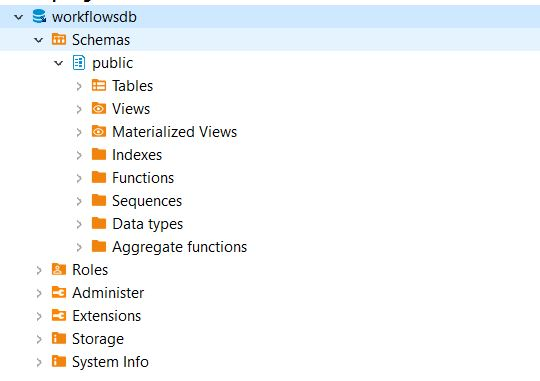

6 Portfolio assignment 7
source(here("src/port_src7.R"))6.1 1. Load the flu (“./data/flu_data.csv), the dengue (.”/data/dengue_data.csv) and the gapminder ({dslabs} package) into three separate dataframes in R
dengue <- read.csv(here::here("7_data/dengue_data.txt"), skip = 11)
head(dengue)## Date Argentina Bolivia Brazil India Indonesia Mexico Philippines Singapore Thailand Venezuela
## 1 2002-12-29 NA 0.101 0.073 0.062 0.101 NA NA 0.059 NA NA
## 2 2003-01-05 NA 0.143 0.098 0.047 0.039 NA NA 0.059 NA NA
## 3 2003-01-12 NA 0.176 0.119 0.051 0.059 0.071 NA 0.238 NA NA
## 4 2003-01-19 NA 0.173 0.170 0.032 0.039 0.052 NA 0.175 NA NA
## 5 2003-01-26 NA 0.146 0.138 0.040 0.112 0.048 NA 0.164 NA NA
## 6 2003-02-02 NA 0.160 0.202 0.038 0.049 0.041 NA 0.163 NA NAflu <- read.csv(here::here("7_data/flu_data.txt"), skip = 11)
head(flu)## Date Argentina Australia Austria Belgium Bolivia Brazil Bulgaria Canada Chile France Germany Hungary Japan Mexico
## 1 2002-12-29 NA NA NA NA NA 174 NA NA NA NA NA NA NA NA
## 2 2003-01-05 NA NA NA NA NA 162 NA NA NA NA NA NA NA NA
## 3 2003-01-12 NA NA NA NA NA 174 NA NA 1 NA NA NA NA NA
## 4 2003-01-19 NA NA NA NA NA 162 NA NA 0 NA NA NA NA NA
## 5 2003-01-26 NA NA NA NA NA 131 NA NA 0 NA NA NA NA NA
## 6 2003-02-02 136 NA NA NA NA 151 NA NA 0 NA NA NA NA NA
## Netherlands New.Zealand Norway Paraguay Peru Poland Romania Russia South.Africa Spain Sweden Switzerland Ukraine
## 1 NA NA NA NA 329 NA NA NA NA NA NA NA NA
## 2 NA NA NA NA 315 NA NA NA NA NA NA NA NA
## 3 NA NA NA NA 314 NA NA NA NA NA NA NA NA
## 4 NA NA NA NA 267 NA NA NA NA NA NA NA NA
## 5 NA NA NA NA 241 NA NA NA NA NA NA NA NA
## 6 NA NA NA NA 227 NA NA NA NA NA NA NA NA
## United.States Uruguay
## 1 NA NA
## 2 NA NA
## 3 NA NA
## 4 NA NA
## 5 NA NA
## 6 NA NAhead(gapminder)## country year infant_mortality life_expectancy fertility population gdp continent region
## 1 Albania 1960 115.40 62.87 6.19 1636054 NA Europe Southern Europe
## 2 Algeria 1960 148.20 47.50 7.65 11124892 13828152297 Africa Northern Africa
## 3 Angola 1960 208.00 35.98 7.32 5270844 NA Africa Middle Africa
## 4 Antigua and Barbuda 1960 NA 62.97 4.43 54681 NA Americas Caribbean
## 5 Argentina 1960 59.87 65.39 3.11 20619075 108322326649 Americas South America
## 6 Armenia 1960 NA 66.86 4.55 1867396 NA Asia Western Asia6.2 2. Check if they are in the right shape. Is the data in the ‘tidy’ format? If not change the format to ‘tidy’
dengue <- dengue %>% pivot_longer(Argentina:Venezuela, names_to = "country", values_to = "value")
head(dengue)## # A tibble: 6 x 3
## Date country value
## <chr> <chr> <dbl>
## 1 2002-12-29 Argentina NA
## 2 2002-12-29 Bolivia 0.101
## 3 2002-12-29 Brazil 0.073
## 4 2002-12-29 India 0.062
## 5 2002-12-29 Indonesia 0.101
## 6 2002-12-29 Mexico NAflu <- flu %>% pivot_longer(Argentina:Uruguay, names_to = "country", values_to = "value")
head(flu)## # A tibble: 6 x 3
## Date country value
## <chr> <chr> <int>
## 1 2002-12-29 Argentina NA
## 2 2002-12-29 Australia NA
## 3 2002-12-29 Austria NA
## 4 2002-12-29 Belgium NA
## 5 2002-12-29 Bolivia NA
## 6 2002-12-29 Brazil 1746.3 3. Change the country and date variables of the three tables so that they coincide in terms of data type, class and values
dengue <- dengue %>% separate("Date", into = c("year", "month", "day"), sep = "-")
dengue <- dengue[-c(2,3)]
dengue$year <- as.integer(dengue$year)
dengue$country <- as.factor(dengue$country)
dengue <- dengue %>%
group_by(year, country) %>%
summarise("country" = country, "dengue_activity" = sum(value, na.rm = T)) %>%
unique()## `summarise()` has grouped output by 'year', 'country'. You can override using the `.groups` argument.head(dengue)## # A tibble: 6 x 3
## # Groups: year, country [6]
## year country dengue_activity
## <int> <fct> <dbl>
## 1 2002 Argentina 0
## 2 2002 Bolivia 0.101
## 3 2002 Brazil 0.073
## 4 2002 India 0.062
## 5 2002 Indonesia 0.101
## 6 2002 Mexico 0flu <- flu %>% separate("Date", into = c("year", "month", "day"), sep = "-")
flu <- flu[-c(2,3)]
flu$year <- as.integer(flu$year)
flu$country <- as.factor(flu$country)
flu <- flu %>%
group_by(year, country) %>%
summarise("country" = country, "influenza_activity" = sum(value, na.rm = T)) %>%
unique()## `summarise()` has grouped output by 'year', 'country'. You can override using the `.groups` argument.head(flu)## # A tibble: 6 x 3
## # Groups: year, country [6]
## year country influenza_activity
## <int> <fct> <int>
## 1 2002 Argentina 0
## 2 2002 Australia 0
## 3 2002 Austria 0
## 4 2002 Belgium 0
## 5 2002 Bolivia 0
## 6 2002 Brazil 1746.4 4. Store the three tables as separate (so six in total) .csv and .rds files.
for (x in c("flu", "dengue", "gapminder")) {
export(get(x), path = paste0(here("7_data//"), x))
}6.5 5. In Dbeaver create a new PostgreSQL database “workflowsdb”
knitr::include_graphics(here("7_data/workflowsdb_in_Dbeaver.JPG"))

Figure 6.1: The workflows database in Dbeaver.
Workflows database in DBeaver
6.6 6. Using RPostgreSQL, insert the tables into the database.
psswd <- .rs.askForPassword("Database Password:")
con <- dbConnect(RPostgres::Postgres(),
dbname = "workflowsdb",
host="localhost",
port="5432",
user="postgres",
password=psswd)dbWriteTable(con, "dengueDB", dengue, overwrite = T)
dbWriteTable(con, "fluDB", flu, overwrite = T)
dbWriteTable(con, "gapminderDB", gapminder, overwrite = T)6.7 7. Inspect the contents of the tables with SQL (in DBeaver) and save the SQL script.
SELECT * FROM "dengueDB";| year | country | dengue_activity |
|---|---|---|
| 2002 | Argentina | 0.000 |
| 2002 | Bolivia | 0.101 |
| 2002 | Brazil | 0.073 |
| 2002 | India | 0.062 |
| 2002 | Indonesia | 0.101 |
| 2002 | Mexico | 0.000 |
| 2002 | Philippines | 0.000 |
| 2002 | Singapore | 0.059 |
| 2002 | Thailand | 0.000 |
| 2002 | Venezuela | 0.000 |
SELECT * FROM "fluDB";| year | country | influenza_activity |
|---|---|---|
| 2002 | Argentina | 0 |
| 2002 | Australia | 0 |
| 2002 | Austria | 0 |
| 2002 | Belgium | 0 |
| 2002 | Bolivia | 0 |
| 2002 | Brazil | 174 |
| 2002 | Bulgaria | 0 |
| 2002 | Canada | 0 |
| 2002 | Chile | 0 |
| 2002 | France | 0 |
SELECT * FROM "gapminderDB";| country | year | infant_mortality | life_expectancy | fertility | population | gdp | continent | region |
|---|---|---|---|---|---|---|---|---|
| Albania | 1960 | 115.40 | 62.87 | 6.19 | 1636054 | NA | Europe | Southern Europe |
| Algeria | 1960 | 148.20 | 47.50 | 7.65 | 11124892 | 13828152297 | Africa | Northern Africa |
| Angola | 1960 | 208.00 | 35.98 | 7.32 | 5270844 | NA | Africa | Middle Africa |
| Antigua and Barbuda | 1960 | NA | 62.97 | 4.43 | 54681 | NA | Americas | Caribbean |
| Argentina | 1960 | 59.87 | 65.39 | 3.11 | 20619075 | 108322326649 | Americas | South America |
| Armenia | 1960 | NA | 66.86 | 4.55 | 1867396 | NA | Asia | Western Asia |
| Aruba | 1960 | NA | 65.66 | 4.82 | 54208 | NA | Americas | Caribbean |
| Australia | 1960 | 20.30 | 70.87 | 3.45 | 10292328 | 96677859364 | Oceania | Australia and New Zealand |
| Austria | 1960 | 37.30 | 68.75 | 2.70 | 7065525 | 52392699681 | Europe | Western Europe |
| Azerbaijan | 1960 | NA | 61.33 | 5.57 | 3897889 | NA | Asia | Western Asia |
6.8 8. Inspect the contents of the tables with dplyr (in R) and save a RMarkdown showing what you are doing.
db_names <- c("fluDB", "dengueDB", "gapminderDB")
tables <- list()
for (i in db_names){
tables[[paste(i)]] <- dbReadTable(con, i)
}general_inspection(tables$fluDB, tables$fluDB$year, tables$fluDB$influenza_activity)## [1] "The data frame tables$fluDB has 3 columns: year, country, influenza_activity"
## [1] "And 406 rows"
## year country influenza_activity
## Min. :2002 Length:406 Min. : 0
## 1st Qu.:2005 Class :character 1st Qu.: 1696
## Median :2008 Mode :character Median : 6772
## Mean :2008 Mean : 20147
## 3rd Qu.:2012 3rd Qu.: 24975
## Max. :2015 Max. :155577
general_inspection(tables$dengueDB, tables$dengueDB$year, tables$dengueDB$dengue_activity)## [1] "The data frame tables$dengueDB has 3 columns: year, country, dengue_activity"
## [1] "And 140 rows"
## year country dengue_activity
## Min. :2002 Length:140 Min. : 0.000
## 1st Qu.:2005 Class :character 1st Qu.: 2.346
## Median :2008 Mode :character Median : 5.556
## Mean :2008 Mean : 6.217
## 3rd Qu.:2012 3rd Qu.: 8.824
## Max. :2015 Max. :27.847
general_inspection(tables$gapminderDB)## [1] "The data frame tables$gapminderDB has 9 columns: country, year, infant_mortality, life_expectancy, fertility, population, gdp, continent, region"
## [1] "And 10545 rows"
## country year infant_mortality life_expectancy fertility population
## Length:10545 Min. :1960 Min. : 1.50 Min. :13.20 Min. :0.840 Min. :3.124e+04
## Class :character 1st Qu.:1974 1st Qu.: 16.00 1st Qu.:57.50 1st Qu.:2.200 1st Qu.:1.333e+06
## Mode :character Median :1988 Median : 41.50 Median :67.54 Median :3.750 Median :5.009e+06
## Mean :1988 Mean : 55.31 Mean :64.81 Mean :4.084 Mean :2.701e+07
## 3rd Qu.:2002 3rd Qu.: 85.10 3rd Qu.:73.00 3rd Qu.:6.000 3rd Qu.:1.523e+07
## Max. :2016 Max. :276.90 Max. :83.90 Max. :9.220 Max. :1.376e+09
## NA's :1453 NA's :187 NA's :185
## gdp continent region
## Min. :4.040e+07 Length:10545 Length:10545
## 1st Qu.:1.846e+09 Class :character Class :character
## Median :7.794e+09 Mode :character Mode :character
## Mean :1.480e+11
## 3rd Qu.:5.540e+10
## Max. :1.174e+13
## NA's :2972## Warning in general_inspection(tables$gapminderDB): missing values for x, y6.9 9. Load the gapminder data in R and change the dataframe in such as way that you could join it to dengue and flue.
tables$fluDB$year %>% unique()## [1] 2002 2003 2004 2005 2006 2007 2008 2009 2010 2011 2012 2013 2014 2015tables$dengueDB$year %>% unique()## [1] 2002 2003 2004 2005 2006 2007 2008 2009 2010 2011 2012 2013 2014 2015The data of flu and dengue are from the year 2002 untill 2015. while the data of gapminder is:
tables$gapminderDB$year %>% unique()## [1] 1960 1961 1962 1963 1964 1965 1966 1967 1968 1969 1970 1971 1972 1973 1974 1975 2012 1976 1977 2014 1978 2016 1979
## [24] 1980 1981 1982 1983 1984 1985 1986 1987 1988 1989 1990 1991 1992 1993 1994 1995 1996 1997 1998 1999 2000 2001 2002
## [47] 2003 2004 2005 2006 2007 2008 2009 2010 2011 2013 2015More than that.
gapminder_02_15 <- tables$gapminderDB %>% filter(year == 2002:2015)## Warning in year == 2002:2015: longer object length is not a multiple of shorter object length6.10 10. Save this clean gapminder data in the “workflowsdb” database
dbWriteTable(con, "gapminder_02_15DB", gapminder_02_15, overwrite = T)6.11 11. Perform some joins (your choice) with SQL (can be done in DBeaver or with dplyr).
SELECT "gapminder_02_15DB".*, "fluDB".influenza_activity, "dengueDB".dengue_activity
FROM "gapminder_02_15DB"
LEFT JOIN "fluDB" ON public."fluDB".year = public."gapminder_02_15DB".year
LEFT JOIN "dengueDB" ON public."dengueDB".year = public."gapminder_02_15DB".year| country | year | infant_mortality | life_expectancy | fertility | population | gdp | continent | region | influenza_activity | dengue_activity |
|---|---|---|---|---|---|---|---|---|---|---|
| Armenia | 2002 | 24.2 | 71.6 | 1.2 | 3047249 | 2370398385 | Asia | Western Asia | 0 | 0 |
| Armenia | 2002 | 24.2 | 71.6 | 1.2 | 3047249 | 2370398385 | Asia | Western Asia | 0 | 0 |
| Armenia | 2002 | 24.2 | 71.6 | 1.2 | 3047249 | 2370398385 | Asia | Western Asia | 0 | 0 |
| Armenia | 2002 | 24.2 | 71.6 | 1.2 | 3047249 | 2370398385 | Asia | Western Asia | 0 | 0 |
| Armenia | 2002 | 24.2 | 71.6 | 1.2 | 3047249 | 2370398385 | Asia | Western Asia | 0 | 0 |
| Armenia | 2002 | 24.2 | 71.6 | 1.2 | 3047249 | 2370398385 | Asia | Western Asia | 0 | 0 |
| Armenia | 2002 | 24.2 | 71.6 | 1.2 | 3047249 | 2370398385 | Asia | Western Asia | 0 | 0 |
| Armenia | 2002 | 24.2 | 71.6 | 1.2 | 3047249 | 2370398385 | Asia | Western Asia | 0 | 0 |
| Armenia | 2002 | 24.2 | 71.6 | 1.2 | 3047249 | 2370398385 | Asia | Western Asia | 0 | 0 |
| Armenia | 2002 | 24.2 | 71.6 | 1.2 | 3047249 | 2370398385 | Asia | Western Asia | 0 | 0 |
6.12 12. Generate a joined table, and export this from the database to R.
CREATE TABLE joined_gapfluden
AS SELECT "gapminder_02_15DB".*, "fluDB".influenza_activity, "dengueDB".dengue_activity
FROM "gapminder_02_15DB"
LEFT JOIN "fluDB" ON public."fluDB".year = public."gapminder_02_15DB".year
LEFT JOIN "dengueDB" ON public."dengueDB".year = public."gapminder_02_15DB".yearjoined_gapfluden <- dbReadTable(conn = con, "joined_gapfluden")dbDisconnect(con)